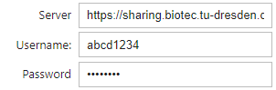

Accéder aux fichiers image dans le owncloud#
NOTE : Ce notebook a été déplacé dans la section “fichiers distants”
Dans ce notebook, nous allons démontrer comment télécharger des fichiers depuis un serveur owncloud, comment les traiter localement et téléverser les résultats sur le serveur.
Selon le cloud que nous utilisons, nous devrons peut-être installer différentes bibliothèques.
Installation Owncloud
pip install pyocclient
Installation Nextcloud
pip install pyncclient
from skimage.io import imread, imshow, imsave
from napari_segment_blobs_and_things_with_membranes import voronoi_otsu_labeling
import ipywidgets as widgets
import owncloud
# import nextcloud_client as owncloud
Connexion#
Après avoir exécuté la cellule suivante localement, vous verrez trois champs de saisie où vous pourrez entrer l’URL du serveur, le nom d’utilisateur et le mot de passe.

server_widget = widgets.Text(value='https://sharing.biotec.tu-dresden.de', description='Server')
username_widget = widgets.Text(description='Username:')
password_widget = widgets.Password(description='Password')
widgets.VBox([server_widget, username_widget, password_widget])
NE PAS appuyer sur Shift-Enter après avoir saisi le nom d’utilisateur et le mot de passe
if username_widget.value == '':
raise RuntimeError('Enter username and password above')
oc = owncloud.Client(server_widget.value)
oc.login(username_widget.value, password_widget.value)
Un message d’erreur typique est 401 : Accès refusé. Vérifiez votre nom d’utilisateur et votre mot de passe.
Récupération d’un fichier#
Nous pouvons télécharger un fichier dans un répertoire local.
# enter the source file here
remote_source_file = '/data/blobs.tif'
# enter the destination
local_file = 'blobs.tif'
oc.get_file(remote_path=remote_source_file,
local_file=local_file)
True
Traitement d’image#
Comme nous avons téléchargé le fichier, le traitement d’image fonctionne comme d’habitude.
image = imread(local_file)
imshow(image)
<matplotlib.image.AxesImage at 0x1d29730e760>
labels = voronoi_otsu_labeling(image, spot_sigma=3.5)
labels
![]()
|
nsbatwm made image
|
Téléversement des résultats#
Avant de téléverser une image sur le cloud, nous devons la sauvegarder localement.
local_file_to_upload = "blobs_labels.tif"
imsave(local_file_to_upload, labels, check_contrast=False)
Nous allons téléverser le fichier dans ce dossier :
remote_folder
'/data/'
oc.put_file(remote_folder, local_file_to_upload)
True
Pour être sûr, nous vérifions si le fichier est bien arrivé en affichant à nouveau les fichiers du dossier.
for f in oc.list(remote_folder):
print (f.path)
/data/blobs.tif
/data/blobs_labels.tif
/data/zfish_nucl_env.tif
Déconnexion#
Quand vous avez terminé, déconnectez-vous !
oc.logout()
True